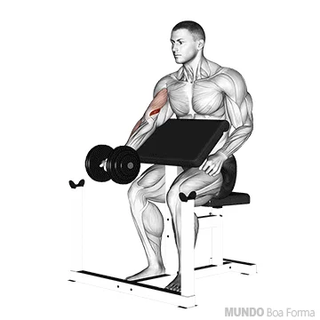

Contrair bem os glúteos e abdomen é essencial;
Mantenha os pés juntos, e as mãos levemente mais afastadas do que a largura dos ombros,inspirar
quando descer e expirar quando subir.
2. Supino reto
Realizar 3 séries de 8-12 repetições carga máxima
ACONSELHÁVEL SUPERVISÃO!
imagine que tenha que esmagar o meio da barra forçando suas extremidades por onde está
segurando; inspirando, baixe a barra em direçõo ao meio do peito, e suba soltando o ár com força
total.
3. Supino inclinado
Realizar 3 séries de 8-12 repetições carga baixa
Com o banco em um angulo de 45°
Mantenha o foco em deixar seus cotovelos alinhados ao peito, inspirando, baixe a carga em
direção ao alinhamento do peito, em seguida levante a carga com força em direção ao alinhamento
do maxilar expirando.
4. Crucifixo em pé na polia
Realizar 3 séries de 10-12 repetições carga moderada
Coloque a carga máxima em que consiga executar o exercios com perfeição
posicione um dos pés um passo a frente, segure as pegas de maneira que consiga aproximar
suas mãos ao maximo, inspire e puxe a carga soutando o ar, baixe a carga inspirando.
o ideal é que após cada série troque o pé que estava a frente.
Biceps
1. Rosca Direta
Realizar 3 séries de 8-12 repetições carga máxima
Foque em contrair braços ao tronco
inspirar e levante a carga alternadamente para o máximo externo, sem deixar de contrair os
braços ao corpo, subir até a altura do peito.
2. Rosca Concentrada
Realizar 3 séries de 8-12 repetições carga máxima
Sentada, apoiar o cotovelo do braço a exercitar na coxa, descer inspirando
concentrando o movimento até o braço ficar levemente dobrado, em seguida subir com velocidade
expirando.
3. Rosca Scott Normal ou Unilateral

Realizar 3 séries de 10-12 repetições carga baixa
Recomendado fazer os dois braços em conjunto
apoie os braços no aparelho, inspire quando baixar a carca concentrando o exercício, em
seguida subir em volocidade expirando.
4. Rosca Martelo
Realizar 3 séries de 10-12 repetições carga máxima
Sentada em um angulo de 45°
Esticar os braços para baixo até ficar levemente flexonados, inspirar quando baixar a carga e
expirar quando subir. NÃO ESTICAR O BRAÇO !
Costas
1. Remada Sentada
Realizar 3 séries de 8-12 repetições carga máxima
Escolha uma carga desafiadora mas que não atrapalhe a execução perfeita do
exercício.
Sente-se no aparelho apoiando seus pés mas não estique suas pernas por completo, imagine
que tenha que espremer uma laranja imaginaria que está no centro das suas costas, com os braços
esticados, inspire fundo e traga a carga em direção ao torax na intenção de esmagar a suposta
laranja em suas costas, puxando também em seguida a carga com os braços até que suas mãos
estejam encostadas ao estômago, expire e relaxe primeiro os braços para só então relaxar as
costas por completo inspirando.
2. Remada com barra
Realizar 3 séries de 8-12 repetições carga moderada
Nesse exercício devemos ter uma maior atenção na lombar.
Escolha uma carga em que não sinta uma pressão na lombar ao executar o exercício;
devidamente posicionada como na imagem a cima, comece o exercício com a carga nos joelhos,
inspire fundo e deslize a carga pela sua coxa a puxando para cima expirando,em seguida baixe
lentamente inspirando.
3. Pull-down
Realizar 3 séries de 10-15 repetições carga máxima
Selecione uma carga desafiadora mas que não impossibilite de fazer o
exercício com perfeição.
Sente de maneira confortavel e trave seus joelhos nas travas a sua frente da maquina.
Após travar a carga de maneira que consiga puxar a barra sentada, respire fundo e traga a barra
até a parte superior do peito expirando, focando em baixar os cotovelos trabalhando sua
dorsal e não forçando a carga com os punhos, em seguida libere a carga concentrando o
movimento e inspirando.
4. Puxada no Pulley
"usar pegas, nao triangulo"
Realizar 3 séries de 10-12 carga maxima
Selecione uma carga desafiadora mas que nao te impossibilite de fazer o
exercicio com perfeição.
Sente de maneira confortavel e trave seus joelhos nas travas a sua frente na maquina.
Após travar a carga de maneira que consiga puxar as pegas sentada, inspire e traga as pegas até
a parte superior do peito expirando, focando em baixar os cotovelos trabalhando sua dorsal
e não forçando a carga com os punhos, em seguida libere a carga concentrando o movimento e
inspirando.
Triceps
1. Triceps no banco
Realizar 3 séries de 8-12 repetições
ir até o cotovelo ficar na linha do ombro
Escolha um banco, sente e apoie suas mãos de maneira seu quadril esteja fora
do banco e que consiga suportar todo o peso do seu tronco nessa posição, mergulhe devagar
somente seu quadril inspirando, mas não deixe que toque ao chão, levante seu proprio peso usando
somente seus braços e expirando
2. Triceps Deitada com Barra W
Realizar 3 séries de 8-12 repetições carga moderada
Em uma barra W, escolha uma carga que ative bem os triceps, porém, que não
crie possíveis riscos no exercicio.
Deitada no banco, levante a barra W como se fosse fazer um supino e em seguida, incline a carga
até que ela ultrapasse uma linha imaginaria vertical partindo da sua testa.
Com os braços travados nessa posição, baixe suavimente somente seus antebraços com a carga
inspirando, depois com os braços imoveis, levante a carga expirando usando somente os antebraços
novamente com velocidade até que seus braços estejam quase esticados; repita o processo.
3. Puxada no Pulley
Realizar 3 séries de 8-12 repetições carga máxima
Após selecionar uma carga desafiadora mas que não atrapalhe a execução do
exercício, foque em manter seus braços imoveis colados ao corpo.
Segure a barra com firmeza e mova a carga para baixo expirando, em seguida deixe que a carga
volte a sua posição inicial mas concentrando o movimento inspirando.
4. Tríceps Francês Unilateral
Realizar 3 séries de 8-12 repetições carga máxima
Esse exercício também pode ser executado com as duas mãos e um halter, porém
com um peso superior.
Após selecionar uma boa carga, posicione o halter atrás da cabeça e imagine que tenha que
empunhar uma espada guardada nas suas costas, levante a carga até acima da cabeça expirando, em
seguida volte com o halter para a posição inicial mas concentrando o movimento baixando devagar.
Não é necessario levantar mais do que acima da cabeça.
5. Puxada Francêsa no Pulley
Realizar 3 séries de 8-12 repetições carga máxima
Após selecionar uma carga que te desafie mas também não atrapalhe na execução
do exercício, posicione as cordas atrás da cabeça e seus cotovelos para cima como nas imagens
acima, foque em deixar seus braços erguidos e imóveis puxe a corda até acima da
cabeça expirando, em seguida deixe que o peso volte para sua posição inicial mas concentrando o
movimento.
Ombros
1. Desenvolvimento Lateral com Halteres
Realizar 3 séries de 10-12 repetições carga baixa
Levantar os braços de forma que consiga ver os dois antebraços com sua visão
periferica, mantenha os cotovelos ligeiramente dobrados inspire e levante os braços
expirando, mantenha os braços ao alto por 1s e em seguida baixe concentrando o movimento e
inspirando novamente.
2. Elevação Frontal
Realizar 3 séries de 10-12 repetições carga baixa
O ideal é que use uma barra ou pega que possibilite o movimento com as mãos
proximas e as palmas voltadas para baixo
Posicionar os pés numa distancia da largura dos ombros, mantenha a postura e olhe fixamente para
frente, inspire e levante a carga até a altura do pescoço com os braços esticados expirando o
ar.
3. Desenvolvimento Com Halteres
Realizar 3 séries de 10-12 repetições carga baixa
Segurar halteres ao lado da cabeça na largura dos ombros e focar em manter os
cotovelos ligeiramente a frente
inspirar e levantar a carga para cima expirando, em seguida baixe a carga para a posição inicial
inspirando.
4. Remada Alta Com Halteres
Realizar 3 séries de 10-12 repetições carga baixa
Mantenha a postura e olhe fixamente para frente, afaste os pés na largura
dos ombros
com os halteres posicionados a frente do corpo, inspire e levante a carca até a altura do peito
expirando o ar, mantenha a carga por 1s e baixe concentrando o movimento e inspirando.
Perna
1. Agachamento
Realizar 4 séries de 8-12 repetições carga máxima
1. Posicione seus pé ligeiramente mais abertos que a largura dos ombros e
a barra nos trapesios de maneira que a carga esteja bem diividida entre os dois lados.
2. Mantenha o olhar sempre para frente, inspire e ative seu core.
3. Execute o agachamento sem inclinar seu tronco para frente demasiadamente ou arquear a
lombrar.
4. Suba com a carga expirando o ar, foque nos seus joelhos para que não faça uma rotação
orizontal para o interior ou exterior não natural.
2. Búlgaro
Realizar 3 séries de 10-15 repetições com cada perna carga máxima
Se posicionar conforme o video abaixo faz toda a diferença !
posicione o pé corretamente, sempre apontados para frente, variar sempre entre perna Dir
e Esq para dar descanso a perna treinada anteriormente. O tempo de descanço entre
series deve ser minimo. Esse é um exercicio de longa duração, não intercale ele com qualquer outro entre cada
serie, foque em fazer somente esse.
3. Abdutora "Para Gluteos"
3 séries de 10-12 repetições carga máxima
Tudo oque você precisa saber sobre esse exercicio esta no video abaixo.
4. Agachamento sumo com carga
3 séries de 10-12 repetições carga máxima
Para executar esse exercicio com perfeição a postura é indispensável !
Usar carga maxima em qualquer exercicio de glúeteo é essencial, no entanto, a
postura torna o exercício efetivo e previne lesões, então escolhar uma carga máxima
na qual consigar fazer o exercício com uma boa postura e movimentos concentrados.
Com a carga predefinida, escolha uma plataforma que possa proporcionar a execução do
movimento a fundo com os braços esticados e o troco ereto sem que a carga toque o chão,
baixe ao maximo inspirando, levante com a carga expirando o ár olhando sempre para frente.
Elevação Pélvica
4 séries de 10 repetições carga máxima
Para que esse exercício seja efetivo é importante usar a combinação de
carga maxima possível e movimentos concentrados. O USO DE UMA PROTEÇÃO NA PELVE É INDISPENSÁVEL
com o auxilio de um banco e com a carga predefinida , inspire e levante o quadril empurrando
os calcanhares e expirando, mantenha a carga por 1s no ár e em seguida baixe o quadril
inspirando novamente.
Leg Press
Realizar 3 séries de 10-12 repetições carga máxima
Com uma boa carga predefinida, posicione seus pés na largura dos
ombros na plataforma, inspire e empure a carga com força total expirando o ar,
nunca
esticar as pernas por completo, em seguida baixe a carga de maneira
concentrada
inspirando com a maior ampliturde possível.
Extensora
Realizar 3 séries de 10-12 repetições carga máxima
Selecione uma boa carga e sente no aparelho de maneira que os
glúteos e toda a extensão da coxa até o joelho estejam apoiadas pelo banco.
inspire e levante a carga com força expirando o ar, em seguida baixe a carga de
maneira
concentrada inspirando ; a sequencia e a velocidade com que você faz esse exercicio
na
fase concentrica (levantando) sendo ela rápida e na fase excentrica
(baixando) devagar, vai ditar os seus melhores resultados.
Adultora "Fechando"
Realizar 3 séries de 10-12 repetições carga máxima
A carga para cada um varia muito de pessoa pra pessoa nesse
exercicio, o ideal é escolher uma carga que force ao maximo o músculo mas com
responsabilidade.
Localize a pegas das mãos, inspire fundo e feche os joelhos com calma expirando o
ár,
mantenha a cagar por 1s e em seguida afaste os joelhos concentrando o movimento.
Flexora
Realizar 3 séries de 10-12 repetições carga máxima
Para a execução desse exercicio há uma infinidade de
aparelhos.
Na posição disponivel do aparelho, procure uma carga que vai ativar os musculos
posteriores da coxa ou musculos isquiotibiais, procure uma execução com volocidade e
força na fase concentrica (levantando a carga) e calma e concentração na fase
excentrica (baixando a carga).
Panturrilha
Realizar 4 séries de 15 repetições carga máxima
A panturrilha é um musculo bastante forte e de recuperação
rápida,
então para ganhos consideráveis nesse musculo, apostar em treinos diarios de
intensidade moderada seria a melhor opção.
Com a apllicação de carga, o seu equilíbrio será comprometido, procure um peso que
te
ajude a se equilíbrar melhor.
Escolha um local em que consiga apoiar todo o seu peso na parte frontal dos pés e
mantenha seu pé em uma postura linear como se estivesse em pé normalmente.
O exercício consiste em levantar e baixar seu proprio peso juntamente com uma carga
máxima predefinida que não atrapalhe a exercução das repetições necessárias listadas
acima. NUNCA BAIXAR SEU CALCANHAR ABAIXO DA POSIÇÃO NATURAL DOS SEUS PÉS.